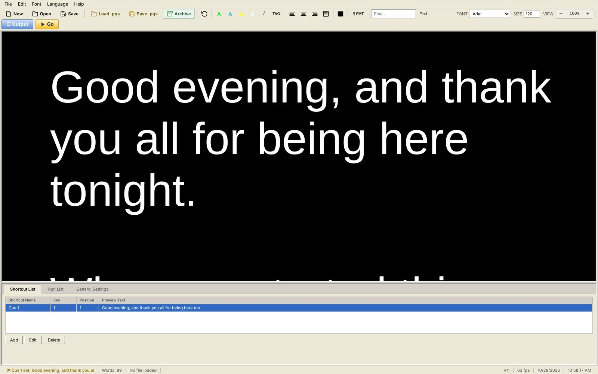
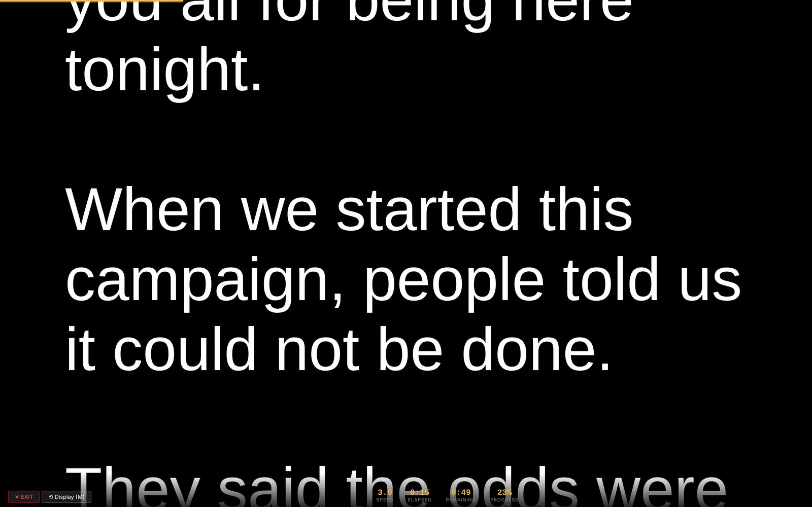
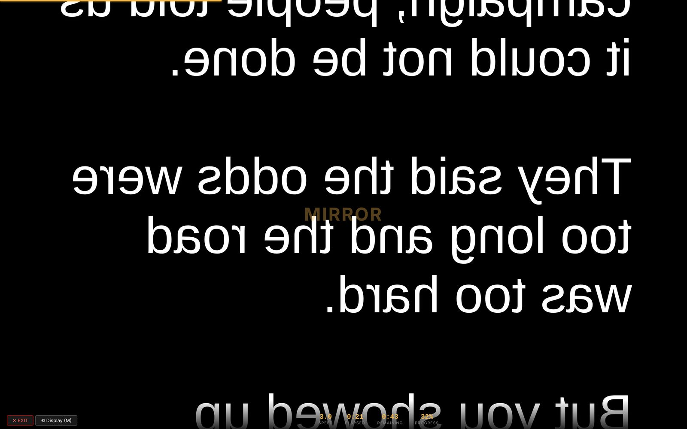

One HTML file that runs in Chrome and never touches the internet. Autosave, crash recovery, mirror and flip, cue markers, and reverse as fast as forward. Made by a live-show operator for keynotes, galas, awards, broadcast and political events.
Live demo of the output window. Real screenshots of the editor and prompter are further down.
PrompterQ is a single HTML file. Open it in Chrome and you have a full teleprompter: editor, output window for the talent glass, run list, cue markers and a timer.
It works with the venue Wi-Fi off, which is how it should be on show day.

The editor wraps lines exactly where the glass will wrap them. What you see on the desk is what the talent sees, pixel for pixel.
Every feature below exists because something went wrong on a real stage once. None of them are there to fill a comparison chart.
Word, RTF and plain text, in any encoding. Smart quotes, em dashes and accented names come through clean instead of as ’ and é.
A snapshot lands on every save, every Go and every Exit. If Chrome dies or the laptop reboots, Recover Autosave lists the snapshots and puts one back in the editor.
Set the archive folder once. Ctrl+Shift+A files the current script with a timestamp. Last-minute edits from the campaign never overwrite the version that was approved.
Normal, mirrored, flipped, or both, from the settings tab or with one key while running. No hardware mirror box, no re-rigging when the glass changes.
Line breaks in the editor are the line breaks on the output. You can mark a cue on line 40 knowing line 40 is where the talent will be.
Tag each speaker's lines with a color. On a panel or an awards show with six presenters, the operator sees the hand-off coming before the talent does.
Ctrl+M drops a cue at the cursor. Cues ride with the text when it is edited, and any key from 0–9 or A–Z jumps straight to its cue while running. 36 cues per script.
Speed runs from +20 to −20. When the speaker skips a paragraph and then comes back to it, you are already there, with a timer and percent-complete to tell the stage manager where you are.
Type three words the speaker just said and the editor jumps to them. Faster than scrolling, quieter than asking.
Cleared the script by accident at 7:58 for an 8:00 downbeat? Ctrl+Shift+Z brings it back.
Queue every script for the night. PgDn and PgUp move between them without leaving the prompter.
Scroll driven by the microphone is in development. It ships when it is reliable on a stage, not before.


Failure on a show is a CEO on stage with no words.
That is the whole design brief. PrompterQ has no accounts to expire, no update that lands the morning of load-in, and no server between the operator and the glass. The file you buy today runs the same way in five years.
PrompterQ is licensed per operator, by request. Tell us where you run shows and you will hear back from the person who built it.